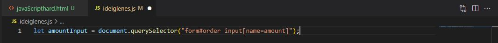
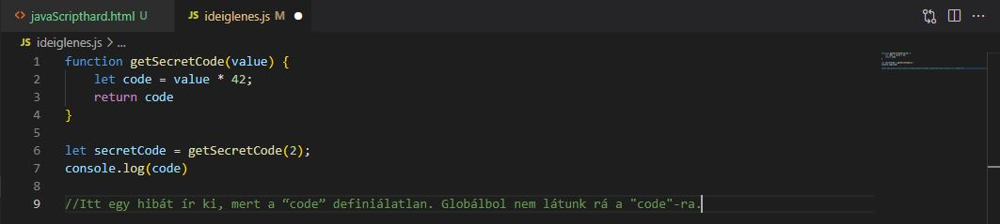
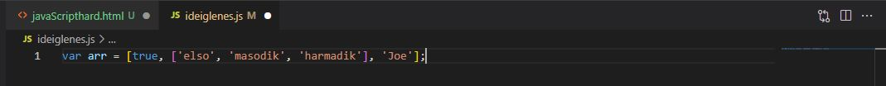

Form elements
A HTML elemeknek van egy speciális csoportja, ezek az űrlap elemek. Abban különböznek a többi elemtől, hogy lehet értékük. Ez az érték tipikusan az, amit a honlap látogatói beírnak. Először meg fogjuk keresni az oldalon az adott elemet, majd kiolvassuk az értéket, amit tartalmaz. Erre azért van szükség, hogy le tudjuk ellenőrizni a bevitt adatok helyességét (validálni tudjuk őket).
querySelector - elemek kiválasztása
Ez a querySelector() érdekes állatfajta. Ha a nevét két részre bontod, jobban megérted hogy mire való:
query: lekérés, lekérdezés, ami ebben az esetben egy HTML elem megkeresését jelenti az oldalon
selector: a lekérés az elem CSS szelektorával történik
Tehát nem kell hozzá új technikákat megtanulnod, ahhoz hogy lekérj egy HTML elemet, elég ha ismered a CSS szelektorokat. Remélem még nem felejtetted el őket, mert most nagyon kelleni fognak.
Példák:
value - az érték
Oké, most már ki tudsz választani egy elemet az oldalon, de mit kezdesz vele? Az űrlap elemeknek van egy speciális tulajdonsága: a value. Ez mondja meg az elembe bevitt aktuális értéket. Most egy komplex példában kiválasztok egy elemet, és kiolvasom az értékét.
Űrlap HTML kódja (nem teljes):
Tehát van egy input-om, aminek a neve "amount", és az "order" id-jű űrlapban van. Akkor ezt a js kódban az alábbi módon is ki tudom választani (írhatsz más szelektort is, a lényeg, hogy egyértelmű legyen):
Input kiválasztása:
Fontos: kiválasztottam az input-ot, és elmentettem egy változóba, hogy később is tudjak vele dolgozni. A változó egy input elemet jelent. Minden, amit az input elemmel csinálni tudok, a változóval is tudok.
Érték kiolvasása:
Egyszerű mint a pofon. Az "amountInput" változó az inputot jelenti, ahova a vásárló beviszi, hogy hány terméket szeretne. Ennek a value tulajdonságában van a szám, ami nekem kell a rendelés árának a kalkulálásához. Ezt kiolvasom, és elmentem az amount változóba. Viszont számmá alakítom, mert a böngésző az input-ok értékét String-ben adja vissza, én pedig majd matekozni szeretnék vele.
Events
Az események (angolul events) alapvetőek a js programozásban. Amikor a felhasználó kattint az oldaladon, vagy görget az egérrel, esetleg bevisz valamilyen adatot vagy elküld egy űrlapot, mindig történik egy esemény, amit figyelni tudsz. A közös bennük, hogy nem tudod előre, hogy pontosan mikor fognak bekövetkezni.
onClick attribútum
Sokféle eseménye létezik az elemeknek attól függően, hogy milyen fajták. Nem mutatom meg az összeset, most elég lesz az onclick nevű. A nevéből is látszik, hogy akkor következik be ez az esemény, amikor rákattintanak egy HTML elemre. Ez lehet gomb, div vagy gyakorlatilag bármilyen látható elem, amire lehet kattintani.
Készítettem egy Bootstrap gombot zöld színben. Az onclick attribútummal megadtam egy eseménykezelőt, ami a js kódban lesz definiálva.
Eseménykezelő függvény:
Megjegyzés: a függvényeket részletesen megvizsgáljuk majd, a feladat szempontjából elég, ha tudod, hogy egyszerű kódblokkok, amelyek több parancsot fognak össze.
Összefoglalva:
Beállítottam az eseménykezelőt az onclick attribútummal, aminek az értéke annak a függvénynek a neve, ami el fog indulni, amikor rákattintanak a gombra. A függvényben vizsgálom az űrlapon bevitt értékeket, hogy helyesek-e vagy akár számításokat is végezhetek.
Functions (fügvények)
A függvény egy egyszerű gép. Bedobáljuk a hozzávalókat, elvégzi a feladatát, és a végén kidobja az eredményt.
Emlékszel még második osztályban? Bedobom a gépbe a hármat és a négyet, tizenkettőt dob ki. Mit csinál a gép? Nyilván összeszorozza a két kapott paramétert. Ugyanígy lehet elképzelni a függvényeket.
A functions (funkciók) egy kódblock, aminek neve van, amit használhatsz, vagy egy változót is használhatsz, amely a függvényre mutat az adott kódblokk végrehajtásakor. Ez segít abban, hogy egy kódot újra használni tudj.
Function (fügvény) használata
Függvényt a function kulcsszóval hozhatsz létre. Két lehetőséged van:
function testFunction() {...} - ez a függvény deklaráció
let testFunction() {...} - ez a függvény expression (úgy adod meg, mint egy változót)
A két megadási mód között nincs működésbeli különbség.
A teljes szintaxis:
Jön most egy egyszerű funkció. A két zárójelben van a funkciónk body-ja, ez az ami végrehajtódik, ha a funkciót meghívjuk. A végén meghívtuk a kapcsos zárójel után a funkciót, ami olyan, mint amikor megadunk mondjuk egy "let"-et, és amikor leírjuk a változóját, kiadja az értékét.
Invocation - függvény meghívása
Az invocation, azaz a függvény meghívása azt jelenti, hogy elindítod a függvényt, az pedig végrehajtja a feladatát. Ezt a függvény neve után tett zárójelekkel teheted meg. Ezt hívják függvényhívásnak, azaz call-nak:
Function Expressions
Deklarálhatjuk is a funkciókat.
Itt már elhagyható a function() után a név, mert deklaráltuk egy "let"-el. El is érdemes hagyni, mert nem futna le, ha véletlenül ott hagynánk és úgy próbálnánk a funkcióra hivatkozni.
Passing Information to Functions
A "function" utáni zárójelbe adhatunk több infót is.
Ebben az esetben az történt, hogy a zárójelbe raktunk két dolgot is, azokkal pedig dolgoztunk a kapcsos zárójelen belül.
Amikor meghívjuk a funkciót, akkor a zárójelbe belerakjuk azokat a dolgokat, amiket szeretnénk, hogy a funkció dolgozza át.
Ha nem rakunk bele annyit, amennyi meg van adva, akkor az undefined.
Function Return Values
Ha egy függvény nem ad vissza semmilyen adatot miután végzett a feladatával, azt eljárásnak szoktuk hívni. A függvények a futásuk végén visszaadnak valamilyen értéket. Ezt a return kulcsszóval tudod meghatározni.
A függvényből a return kulcsszóval is kaphatunk infókat.
Ilyenkor nem a függvényben van az utasítást, a return visszadobja a műveletet, de nem csinál vele semmit. A fenti példában tehát a kapcsos zárójel után ezért is kell a console.log, mert amúgy nem menne most ki. Tehát a return röviden azt csinálja, hogy a függvényhívás helyére küldi vissza az adatot.
Function Scope
A funkcióknak van egy saját hatóköre. Ezek a paraméterek, és a lokális változói a funkciói.
Using Functions to Modify Web Pages
Accessor
Az innerHTML egy accessor, mert el lehet érni vele egy bizonyos tulajdonságot olvasásra és írásra is.
Egy elem HTML tartalmának kiolvasása:
Mi történt?
Kiválasztottam az "order" id -jű űrlap "message" osztályú elemét. Az innerHTML tulajdonság segítségével kiolvastam az aktuális tartalmát, és elmentettem egy változóba.
Tartalom módosítása
Korábban már volt olyan function, ami módosította a honlapot. A formnál az előző oldalon egy inner.HTML-el mutattunk rá egy elemre.
Azoknak a HTML elemeknek, amelyeknek van lezáró tag-je (azaz nem self-closed elemek) lehet tartalma. Az innerHTML tulajdonság js alól elérhető, és ki lehet vele olvasni, vagy módosítani is lehet az elemek tartalmát, azaz a bennük található HTML kódot.
Most kompletten megmutatom neked, hogyan lehet mondjuk kiírni a rendelés összegét egy p elembe.
Az űrlap HTML kódja:
Tehát van egy űrlapod, benne az amount mezővel, egy gombbal és egy message paragrafussal az üzenetnek.
A JS kód:
A függvény utolsó sora az érdekes most számodra. A priceField változó a p elemen belüli span elemet jelenti, ahol az összeg megjelenik. Ennek a tartalmát módosítottam a teljes összegre (totalAmount).
Clean Code
Ahhoz, hogy a kódod később is ismerős legyen, illetve hogy mások is megértsék, fontos hogy tisztán és átláthatóan dolgozz. A változóknál már foglalkoztunk kicsit a jó nevekkel, itt most kibővítve vesszük át a dolgot.
Fontos: célunk az, hogy olyan kódot írjunk, ami úgy olvasható mintha mondatokat olvasnánk.
Elnevezési szabályok
A változók és függvények nevei alapvető fontosságúak egy kódban. Nem kell sajnálni a karaktereket arra, hogy beszédes neveket válassz.
Beszédes nevek
Nincs szükség kommentekre, ha kifejező az elnevezés.
Ne legyen a név félrevezető:
Nevezd át az osztályt, metódust, változót, stb., amikor a jelentése változik.
O és I kerülése:
A kisbetűs L és nagybetűs O használata is félreinformálhat, mert úgy néznek ki, mint a 0 (nulla) és az 1 (egy).
Használj könnyen kiejthető neveket:
Kommentek
Ritkán írj kommenteket!
- Ha sűrűn jelennek meg kommentek a kódban, elkezdünk nem törődni velük.
- Tartogasd a kommenteket olyan speciális esetekre, amikor a figyelem felhívására van szükség.
- A jó komment olvasója hálás lesz, hogy az a komment megíródott.
Informatív komment Valóban plusz információt közöl az olvasóval:
Formázás
Fontos a formázás? Amikor a forráskódod olvasója ránéz a kódodra, akkor először akaratlanul is annak formázását figyeli meg (és nem a neveket vagy valami mást). A formázás a kommunikációról szól. Egy jól "kommunikáló" kódot könnyű változtatni és karbantartani, tehát a cégnek pénzt takarít meg.
Mi számít a formázásnál?
- Fájlméret
- Függőleges formázás
- Vízszintes formázás
- Indentáció
Fájlméret
- Rövid fájlméreteket tarts fenn!
- De mi számít rövidnek? A statisztikák arra mutatnak rá, hogy a modern szoftverek átlagosan 50-60 soros fájlokat tartalmaznak, míg más szoftverek 200-at.
Függőleges formázás - Üres sorok elválasztó eszközként
A változók definícióit a konstruktorban elválasztottam a metódus hívásoktól.
Vízszintes formázás - sorok hossza
Tartsd a sorok hosszát maximum 80 karakternél. Így nem kell soha vízszintesen görgetni, amikor a kódot olvasod.
Indentáció
Az indentáció azt jelenti, hogy egyes sorok beljebb kezdődnek a többinél.
- A szóköz használata jobb, mert minden szerkesztőben ugyanakkora lesz, függetlenül a tab méretétől.
- 2 vagy 4 szóköz is lehet.
- De: használja mindenki ugyanazt az indentációs stílust a csapatban!
Függvények
Egy függvény egy és csakis egy dolgot csináljon!
Akkor jó a függvény, ha már nem lehet értelmesen több másik függvénybe kiszervezni a működését.
- 4 - 6 sor az ideális hosszúság, 10 már sok.
- A függvények nevénél igét vagy ige szerkezetet válassz.
- A függvénynek maximum 3 argumentuma - paramétere legyen.
Összefoglalás
A fenti szabályok a legtöbb esetben hasznosak amikor dolgozol. De sokszor előfordul, hogy a csapat más szabályokban egyezik meg praktikussági okokból, ebben az esetben természetesen azok az irányadóak.
Array (tömbök)
Értékek indexelt halmaza. Ez a tömb. Úgy kell elképzelni, mint egy polc, ahová felpakoljuk a dolgokat.
Az index az a mutató, amivel eléred a tömb egyes elemeit. Tehát minden elemnek van egy száma a tömbön belül, amivel le tudod kérni az értékét, vagy módosítani tudod.
A tömbökbe szabadon elhelyezhetsz Number, String, Boolean, Object sőt akár Array típusú elemeket is. Ha tömbbe tömböt teszel, akkor azt többdimenziós tömbnek is nevezik.
DinamikusJavaScript esetén a tömb dinamikus, ami azt jelenti, hogy bármikor vehetsz fel új elemet, vagy törölhetsz meglévőket. Ez nem minden programnyelv esetén van így, a legtöbbször előre meg kell adnod a tömböd hosszát. De szerencsére mi js-ben dolgozunk, úgyhogy ez legyen a Java-sok és a C#-osok gondja :)
MixedMásik különbség például a Java nyelvvel szemben, hogy lehet mixelt a tömb, azaz egy tömbön belül különböző típusú elemeket is tárolhatsz.
Tömbök létrehozása
Új tömböt legegyszerűbben a szögletes zárójelek használatával hozhatsz létre.
Az alábbi példában egy három elemű tömböt definiálok:
Hozzáférés a tömb elemeihez, az index
Amikor elemeket adsz a tömbhöz, a JavaScript értelmező automatikusan megszámozza azokat.
JavaScriptben a tömb indexek csak számok lehetnek.
FONTOS: az index mindig 0-val kezdődik!
Azaz a tömb első elemének indexe 0, és nem 1.
A példa azt mutatja meg, hogy egy tömb elemeit hogyan éred el és hogyan módosíthatod az indexük segítségével:
Többdimenziós tömbök
Ezeknél egy tömböt egy másik tömbbe ágyaznak. Úgy képzeld el, mint egy Excel táblát, ahol a sorok a külső tömb elemei, a belső tömbök pedig a cellákat tartalmazzák.
Például:
A példában a tömb második eleme szintén egy tömb.
A beágyazott tömb második elemének elérése: arr[1][1]
isArray(), tömb azonosítása
A munkád során előfordul, hogy meg kell állapítanod egy változóról, hogy Array típusú-e? A typeof utasítás a tömböket Object típusúnak ismeri fel, ezért nem alkalmas az azonosításukra. Erre a célra az Array objektum isArray metódusa szolgál. Ha megadsz neki egy változót, akkor megállapítja, hogy tömb-e.
A példában a tömb esetén true értéket kapsz vissza, ami azt jelenti hogy igaz - azaz tömbbel van dolgod. Ellenkező esetben az eredmény false - hamis - azaz nem tömböt adtál át az isArray metódusnak:
Array metódusok
A tömbök esetén számos metódus áll rendelkezésre az adatok kereséséhez, ellenőrzéséhez, a tömbök vágásához vagy egyesítéséhez. Most csak a legalapvetőbbeket mutatom meg, később a függvények megismerése után visszatérünk még a magasabb szintű metódusokra is.
push()
Segítségével új elemet tudsz felvenni a tömb végére. Azaz az így felvett elem a tömböd utolsó eleme lesz.
Fontos, hogy ez a metódus megváltoztatja az eredeti tömböt, azaz nem kell felüldefiniálnunk ahhoz, hogy a módosítások érvénybe lépjenek. Miután a metódus lefutott, a tömb új hosszát adja vissza.
FONTOS: módosítja az eredeti tömböt.
pop()
A push()-tól eltérően nem hozzáad, hanem elvesz egy elemet a tömb végéről. A törölt elemet adja vissza, és szintén azonnal módosul az eredeti tömb.
FONTOS: módosítja az eredeti tömböt.
A példában a push() és a pop() működését is bemutatjuk:

unshift()
A push() -hoz hasonlóan működik, csak a tömb elejére ad hozzá új elemet, azaz eggyel hátrébb tolja az elemeket. Hatására minden meglévő tömbelem indexe eggyel nőni fog.
FONTOS: módosítja az eredeti tömböt.
shift()
Ez pedig a pop() párja, egy elemet kivesz a tömb elejéről, és a többit eggyel előre tolja. Hatására minden meglévő tömbelem indexe eggyel csökkenni fog.
FONTOS: módosítja az eredeti tömböt.
A példában az unshift() és a shift() működését is megmutatom neked:
Paraméterek átadása másolással és referencia szerint
Primitívek átadása érték szerint
Amikor paramétereket adsz át egy függvénynek, akkor érdekes dolgok történnek a háttérben, ezért nem árt tisztában lenni azzal, hogy a függvények mit kezdenek a nekik átadott adatokkal.
Primitívek átadása érték szerint
Primitív változó típusok: Boolean, Number, String, Undefined, Null
a primitív típusokat másolja a JS. Azaz, amikor átadsz egy ilyen változót a függvénynek, akkor egy másolatot készít az eredetiről és azzal dolgozik.
Miért ez a kimenet?
- Létrehoztam a varOne és varTwo változókat 10 és 20 értékekkel. Amikor átadtam őket a függvénynek, akkor kiolvasta az értéküket és ahogy a paraméterlistában megadtam callByValue(varOne,varTwo) azon a néven létrehozott két lokális változót a függvényben és az eredeti értékeket bemásolta ebbe az két új változóba. Amikor kiíratom a függvényben az értékeket, látszik hogy megváltoztak.
- Mégis amikor az eredeti értékeket újra kiíratom a függvényhívás után, azok változatlanok maradnak. Azért, mert nem az eredeti változókkal dolgozik a függvény, csak a másolatukkal.
Objektumok átadása referencia szerint
Miket nevezek itt objektumoknak? Azokat a változókat, amelyek nem primitív típusok. Itt elsősorban a már tanult tömbökre gondolok és lesznek még az Object típusok, amelyeket hamarosan megismersz.
Tehát a következő szabályok rájuk vonatkoznak.
Paraméter átadás referencia szerint: az objektumokat nem másolja a JS. Minden változónak van egy címe a memóriában. Amikor egy objektumot kap a függvény, akkor létrejön egy új név a lokális változónak, de a memóriacím, ahova mutat, az ugyanaz lesz. Tehát két különböző néven ugyanazt a változót éred el.
Miért ez a kimenet?
- Létrehoztam a varArray tömböt [10] értékkel.
- Amikor átadtam a függvénynek, szándékosan más nevet választottam a lokális változónak: arr, mivel az teljesen mindegy, hogy mi a neve a függvényen belül. A függvényben megváltoztattam a 0 indexű elemet és kiírtam. Látszik, hogy meg is változott.
- Most jön a meglepetés: amikor az eredeti tömböt újra kiíratom a függvényhívás után, akkor is megváltozott. Azért, mert az eredeti változó referenciájával dolgozik, tehát ugyanazt a helyet módosítja a memóriában.
Előnyei:
- a függvényre nézve globális objektumokat is könnyen tudsz módosítani
- takarékoskodik a memóriával, mivel nem foglal új memóriaterületet mint a másolásnál
Hátrányai:
- az átadott objektumokat akaratodon kívül módosíthatod
Objektumok
Adatok tárolása kulcs-érték párok segítségével. Ez az objektum. Abban a tekintetben hasonlít a tömbökre, hogy egy kollekció, amiben bármilyen típusú adatot tárolhatsz, akár tömböket vagy másik objektumokat is. Más programnyelvekben nem így hívják ezt az adattípust, de mindegyikben van megfelelője.
Hasonló a tömbökhöz, amik szintén egy helyre tartozó adatokat gyűjtenek össze, viszont itt nem számokkal vannak megnevezve az adatok, hanem vannak kulcsai (name, e-mail, address, stb.)
Rugalmas adattárolás objektumok segítségével
key - kulcs
Az objektumok esetén nem automatikusan indexelődnek az elemek, mint a tömb esetén, hanem mi határozzuk meg a kulcs-érték párokat.
A kulcsoknak minden esetben String típusúaknak kell lenniük.
value - érték
A kulcsokkal jelölt értékeket tulajdonságoknak is nevezik. Az alábbi példában egy egyszerű objektum létrehozását láthatod. Figyeld meg, hogy az objektumot kapcsos zárójelek határolják, a kulcs-érték párokat vesszők, a kulcsot pedig kettőspont választja el az értéktől:
Object.keys() - az objektum kulcsai
Az objektumok esetén fontos, hogy tudd mit tárolsz bennük. Mivel az objektum elemeit a kulcsok segítségével éred el, ezért nem árt tudni, hogy milyen kulcsok vannak egy objektumban. Ezeket a kulcsokat pedig az Object.keys metódus adja vissza.
Az Object.keys metódus tömb formában adja vissza a kapott objektum kulcsait.
Az objektum tulajdonságait úgy tudod elérni, hogy az objektum neve után ponttal elválasztva megadod a kiválasztott tulajdonság kulcsát, vagy szögletes zárójelek között [ ] String -ként adod meg:
Object.values() - Az objektum értékeit tudom lekérni
Object.entries() - Ez mindent megmutat
Az objektum hossza
Az objektumoknak nincs length tulajdonsága, mint a tömböknek, ezért más módszerhez kell folyamodnod, ha szeretnéd megtudni az elemeiknek a számát. Erre a legegyszerűbb módszer, ha nem az elemeiket, hanem a kulcsaikat számolod meg.
Figyelem: a példában láncolt metódus hívást alkalmazunk.
Ennek lényege, hogy egy függvény által visszaadott típusra azonnal meghívod annak szabványos metódusát vagy lekéred egy adott tulajdonságát, jelen esetben a tömb elemeinek számát, azaz a tömb hosszát.
Az Object.keys tömböt ad vissza, majd annak le is kérheted azonnal a length tulajdonságát:
Konstans objektumok használata
Arról már beszéltünk, hogy nem lehet új értéket adni a const kulcsszóval létrehozott változóknak. De tömbök és objektumok esetén van egy kiskapu.
Mi is történik, amikor egy változót a const kulcsszóval hozol létre?
Read only: csak olvasható referenciát hoz létre az értékre. Tehát rámutat, referenciát jelent egy memória területre ahol az értéke van. De nem lehet rajta keresztül a memória terület tartalmát módosítani.
Mutable -Immutable
Mutable: az adott változó értéke meg tud változni, tud mutálódni.
Immutable: értelemszerűen az előbbi ellentéte. Tehát az ilyen változót vagy értéket lehet olvasni, de írni - változtatni nem.
const és Object
Először készítek egy objektumot a let kulcsszó használatával és módosítom egy másikra, mert mutable, azaz meg lehet változtatni az értékét:
Nem történt semmi probléma, a kód lazán lefutott. A user azonosító egy értékre mutat a memóriában. Amikor felülírom, nincs semmi baj, az azonosító onnan kezdve egy másik értékre fog mutatni.
Most ugyanezt megpróbálom const kulcsszóval is, ami immutable adatkötést hoz létre:
Az lett amire számítottam, nem megy a dolog. Nem lehet hozzárendelni új értéket a const változóhoz.
Constant property change:
A const kulcsszóval definiált objektumok és tömbök tulajdonságait / elemeit meg tudom változtatni!
Miért? Azért, mert az objektum és a tömb különálló változókat tárol a memóriából és csak összefogja őket. Amikor az objektum egy tulajdonságát megváltoztatom, azzal az objektum kötése az azonosítóhoz nem fog megváltozni, csupán az egyik tulajdonságát módosítottam.